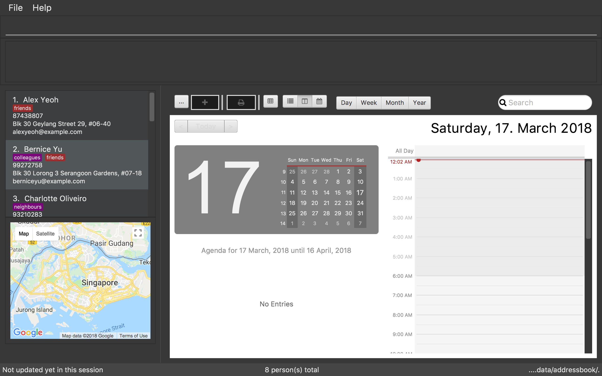

By: CS2103JAN2018-W14-B4 Since: Jun 2016 Licence: MIT
1. Introduction
CelebManager (CM) is for celebrity managers who prefer to use a desktop app for managing their celebrity’s schedule with ease. More importantly, CM is optimized for those who prefer to work with a Command Line Interface (CLI) while still having the benefits of a Graphical User Interface (GUI). If you require a versatile application that has the feature of managing contacts, organising schedules, emailing (Coming in v2.0) and trip planning. You are at the right place as CM would be the best platform for you, with its integration of address book, calendar and visual maps. Interested? Jump to the Section 2, “Quick Start” to get started. Enjoy!
2. Quick Start
Follow this series of steps to have the CelebManager app quickly up and running on your computer.
-
Ensure you have Java version
1.8.0_60or later installed in your Computer. The link to the latest version of Java can be found here.Having any Java 8 version is not enough.
This app will not work with earlier versions of Java 8. -
Download the latest
addressbook.jarhere. -
Copy the file to the folder you want to use as the home folder for your CelebManager.
-
Double-click the file to start the app. The GUI should appear in a few seconds.
The image below (Figure 1) shows the current GUI of CelebManager.
Figure 1. GUI of CelebManager -
Type
helpin the command box and press Enter to execute it. A help window should be opened.Refer to Section 3, “Features” for details of all commands available in CelebManager and their example usage.
3. Features
For each of the command in CelebManager, their formats follow some general patterns as mentioned in the text box below.
Command Format
-
Some commands have an alias, which you can also use to execute the command e.g. to add a person to CelebManager, you can type either
add n/John Doeora n/John Doe. -
Words in
UPPER_CASEare the parameters to be supplied by the user e.g. inadd n/NAME,NAMEis a parameter which can be used asadd n/John Doe. -
Items in square brackets are optional e.g
n/NAME [t/TAG]can be used asn/John Doe t/friendor asn/John Doe. -
Items with
… after them can be used multiple times including zero times e.g.[t/TAG]…can be used ast/friend,t/friend t/familyetc. -
Parameters can be in any order e.g. if the command specifies
n/NAME p/PHONE_NUMBER,p/PHONE_NUMBER n/NAMEis also acceptable.
Precaution
-
You should not click inside the calendar at all times, except for scrolling up and down using the scroll bar.
-
Commands that modify the people and appointments stored in CelebManager (
add,delete,edit,undo,redo,addAppointment) must be performed in combined calendar view unless specified otherwise.
Information about combined calendar view can be found in
Section 3.4.2, “Changing to view the combined calendar:viewCombinedCalendar[Since v1.3]”.
The following are all the commands available to you:
3.1. General Features
3.1.1. Clearing all entries : clear [Since v1.0]
Clears all entries from CelebManager.
Alias: c
Format: clear
3.1.2. Exiting the program : exit [Since v1.0]
Exits the program.
Alias: x
Format: exit
3.1.3. Listing entered commands : history [Since v1.0]
Lists all the commands that you have entered in reverse chronological order.
Alias: h
Format: history
|
Pressing the ↑ and ↓ arrows will display the previous and next input respectively in the command box. |
3.1.4. Viewing help : help [Since v1.0]
Shows a help window that contains this User Guide.
Format: help
3.1.5. Undoing previous command : undo [Since v1.0]
Restores CelebManager to the state before the previous undoable command was executed.
Alias: u
Format: undo
|
Undoable commands: those commands that modify CelebManager’s content ( |
|
Undoing deletion of a |
Examples:
-
delete 1
list
undo(reverses thedelete 1command)
|
If a |
-
select 1
list
undo
Theundocommand fails as there are no undoable commands executed previously. -
delete 1
clear
undo(reverses theclearcommand and creates new calendars for allcelebritys restored byundo)
undo(reverses thedelete 1command)
3.1.6. Redoing the previously undone command : redo [Since v1.0]
Reverses the most recent undo command.
Alias: r
Format: redo
Examples:
-
delete 1
undo(reverses thedelete 1command)
redo(reapplies thedelete 1command) -
delete 1
redo
Theredocommand fails as there are noundocommands executed previously. -
delete 1
clear
undo(reverses theclearcommand)
undo(reverses thedelete 1command)
redo(reapplies thedelete 1command)
redo(reapplies theclearcommand)
3.1.7. Saving the data [Since v1.0]
CelebManager data are saved in the hard disk automatically after any command that changes the data.
There is no need to save manually.
3.2. Address Book Features
3.2.1. Adding a person: add [Since v1.0]
Adds a person to CelebManager.
Alias: a
Format: add n/NAME p/PHONE_NUMBER e/EMAIL a/ADDRESS [t/TAG]…
| A person can have any number of tags, including 0. |
Examples:
-
add n/John Doe p/98765432 e/johnd@example.com a/John street, block 123, #01-01 -
add n/Betsy Crower t/friend e/betsycrowe@example.com a/Newgate Prison p/1234567 t/criminal
3.2.2. Deleting a person : delete [Since v1.0]
Deletes the specified person from CelebManager.
Alias: d
Format: delete INDEX
Examples:
-
list
delete 2
Deletes the 2nd person in CelebManager. -
find Betsy
delete 1
Deletes the 1st person in the results of thefindcommand.
3.2.3. Selecting a person : select [Since v1.0]
Selects the person identified by the index number used in the last person listing.
Alias: s
Format: select INDEX
Examples:
-
list
select 2
Selects the 2nd person in CelebManager. -
find Betsy
select 1
Selects the 1st person in the results of thefindcommand.
3.2.4. Editing a person : edit [Since v1.0]
Edits an existing person in CelebManager.
Alias: e
Format: edit INDEX [n/NAME] [p/PHONE] [e/EMAIL] [a/ADDRESS] [t/TAG]…
Examples:
-
edit 1 p/91234567 e/johndoe@example.com
Edits the phone number and email address of the 1st person to be91234567andjohndoe@example.comrespectively. -
edit 2 n/Betsy Crower t/
Edits the name of the 2nd person to beBetsy Crowerand clears all existing tags.
3.2.5. Listing all persons : list [Since v1.0]
Shows a list of all persons in CelebManager.
Alias: l
Format: list
3.2.6. Locating persons by name: find [Since v1.0]
Finds persons whose names contain any of the given keywords.
Alias: f
Format: find KEYWORD [MORE_KEYWORDS]
Examples:
-
find John
ReturnsjohnandJohn Doe. -
find Betsy Tim John
Returns any person having namesBetsy,Tim, orJohn.
3.2.7. Removing a tag : removeTag [Since v1.2]
Removes the specified tag from every person with it in CelebManager and shows the number of person(s) affected by this
operation.
Alias: rt
Format: removeTag TAG
Examples:
-
removeTag friends
Removes the tag,friendsfrom every person with it in CelebManager and shows the number of person(s) affected. -
removeTag colleagues
Removes the tag,colleaguesfrom every person with it in CelebManager and shows the number of person(s) affected.
3.3. Appointment Features
3.3.1. Adding an appointment: addAppointment [Since v1.2]
Adds an appointment to CelebManager.
Alias: aa
Format: addAppointment n/APPOINTMENT_NAME [l/LOCATION] [sd/START_DATE] [st/START_TIME] [ed/END_DATE] [et/END_TIME] [c/CELEBRITY_INDEX]…
Examples:
-
addAppointment n/Oscars 2018 l/Hollywood sd/23-03-2018 st/14:00 ed/23-03-2018 et/20:00 -
addAppointment n/Dentist Appointment l/Dental Clinic st/15:45 c/1 c/3
3.3.2. Editing an appointment editAppointment [Since v1.4]
Edits an appointment currently stored in CelebManager.
Alias: ea
Format: editAppointment APPOINTMENT_INDEX [n/APPOINTMENT_NAME] [l/LOCATION] [sd/START_DATE] [st/START_TIME] [ed/END_DATE] [et/END_TIME] [c/CELEBRITY_INDEX]…
Examples:
-
`editAppointment 2 n/Dentist Appointment l/Orchard Road
-
editAppointment 1 st/16:00 et/20:00 sd/23-03-2018 c/1 c/2
|
You can only edit an appointment when you are in appointment list view. Refer to
Section 3.3.4, “Listing appointments: |
3.3.3. Deleting an appointment deleteAppointment [Since v1.4]
Deletes the specified appointment from CelebManager.
Alias: da
Format: deleteAppointment INDEX
|
You can only delete an appointment when you are in appointment list view. Refer to
Section 3.3.4, “Listing appointments: |
Examples:
-
listAppointment
deleteAppointment 2
Deletes the 2nd appointment in the appointment list from CelebManager. -
listAppointment
deleteAppointment 1
Deletes the 1st appointment in the appointment list from CelebManager.
3.3.4. Listing appointments: listAppointment [Since v1.3]
Lists all appointments in our CelebManager.
Alias: la
Format: listAppointment
3.3.5. View appointment: viewAppointment [Since v1.4]
View a specific appointment based on list generated by listAppointment in CelebManager.
Alias: va
Format: viewAppointment INDEX
Examples:
-
viewAppointment 1
The state of CelebManager in figure 2 after input of listAppointment.
listAppointment inputThe state of CelebManager in figure 3 after the example input `viewAppointment i/1'. Which selects the first appointment in the list.
viewAppointment i/1 input
3.4. Calendar Features
3.4.1. Changing the calendar: viewCalendar [Since v1.3]
Changes to view the calendar of the specified celebrity.
Alias: vc
Format: viewCalendar INDEX
Examples:
-
viewCalendar 1
Changes to view the calendar of the 1st person in the list of contacts, if the 1st person is acelebrity.
3.4.2. Changing to view the combined calendar: viewCombinedCalendar [Since v1.3]
Changes to view the combined calendar that shows all celebrity 's appointments in one calendar.
Alias: vcc
Format: viewCombinedCalendar
3.4.3. Changing the calendar view: viewCalendarBy [Since v1.3]
Changes the calendar view to a different one specified by the user.
Alias: vcb
Format: viewCalendarBy VIEW
Examples:
-
viewCalendarBy day
Changes the calendar view to day view that looks similar to the calendar in red rectangle in the figure below.
viewCalendarBy day input|
CelebManger by default shows calendar in day view whenever it gets launched. Hence you need to first change to other
calendar view before using |
-
viewCalendarBy week
Changes the calendar view to week view that looks similar to the calendar in red rectangle in the figure below.
viewCalendarBy week input-
viewCalendarBy month
Changes the calendar view to month view that looks similar to the calendar in red rectangle in the figure below.
viewCalendarBy month input
3.5. Map Features
Figure 2 is a snippet of the MapPanel which shows the results of all map related features.
MapPanel
Do not click on the Google logo or Terms of Use button.
|
3.5.1. Estimate route on map : estimateRoute [Since v1.3]
Shows the estimated route in the map interface and displays the estimated distance and time of travel in result display.
Any existing location marker or route will be removed.
Alias: er
Format: estimateRoute sma/MapAddress ema/MapAddress
Examples:
-
estimateRoute sma/Punggol ema/NUS
Updates the map by re-centering to the new route ofPunggolandNUS.
The snippet in Figure 5 shows the updated map after the command input of estimateRoute sma/Punggol ema/NUS.
MapPanel after CommandInput3.5.2. Show location on map : showLocation [Since v1.2]
Shows the specific location in the map interface, by marking the latitude and longitude with a location marker.
Any existing location marker or route will be removed.
Alias: sl
Format: showLocation ma/MapAddress
Examples:
-
showlocation ma/Punggol
Updates the map by re-centering to the new locationPunggoland adding a location marker to it.
The snippet in Figure 6 shows the updated map after the command input of showLocation ma/Punggol.
MapPanel after CommandInput4. FAQ - Frequently Asked Questions
Q: How do I transfer my data to another Computer?
A: Install the app in the other computer and overwrite the empty data file it creates with the file that contains the
data of your previous CelebManager folder.
5. Command Summary
The following are summarized versions of all the commands introduced above displayed in alphabetical order. The commands
are displayed with their respective command format and an example highlighting the usage. An optional field is enclosed
within a pair of []. A field that can be repeatedly entered with different input values is followed by ….
-
Add
add n/NAME p/PHONE_NUMBER e/EMAIL a/ADDRESS [t/TAG]…
e.g.add n/James Ho p/22224444 e/jamesho@example.com a/123, Clementi Rd, 1234665 t/friend t/colleague -
Add Appointment :
addAppointment n/APPOINTMENT_NAME [l/LOCATION] [sd/START_DATE] [st/START_TIME] [ed/END_DATE] [et/END_TIME] [c/CELEBRITY_INDEX]…
e.g.addAppointment n/Oscars 2018 l/Hollywood sd/23-03-2018 st/14:00 ed/23-03-2018 et/20:00 c/1 c/2 -
Clear :
clear -
Delete :
delete INDEX
e.g.delete 3 -
Edit :
edit INDEX [n/NAME] [p/PHONE_NUMBER] [e/EMAIL] [a/ADDRESS] [t/TAG]…
e.g.edit 2 n/James Lee e/jameslee@example.com -
Edit Appointment :
editAppointment APPOINTMENT_INDEX [n/APPOINTMENT_NAME] [l/LOCATION] [sd/START_DATE] [st/START_TIME] [ed/END_DATE] [et/END_TIME] [c/CELEBRITY_INDEX]…
e.g.editAppointment n/Dentist Appointment l/Clementi Road st/15:00 et/16:00 c/3 -
Estimate Route :
estimateRoute sma/LOCATION ema/LOCATION
e.g.estimateRoute sma/Punggol ema/NUS -
Find :
find KEYWORD [MORE_KEYWORDS]
e.g.find James Jake -
Help :
help -
History :
history -
List :
list -
List Appointments :
listAppointment -
Redo :
redo -
Remove Tag :
removeTag TAG
e.g.removeTag friends -
Select :
select INDEX
e.g.select 2 -
Show Location :
showLocation ma/LOCATION
e.g.showLocation ma/Punggol -
Undo :
undo -
View Appointment By :
viewAppointment i/INDEX
e.g.viewAppointment i/1 -
View Calendar :
viewCalendar INDEX
e.g.viewCalendar 1 -
View Calendar By :
viewCalendarBy VIEW
e.g.viewCalendarBy week -
View Combined Calendar :
viewCombinedCalendar